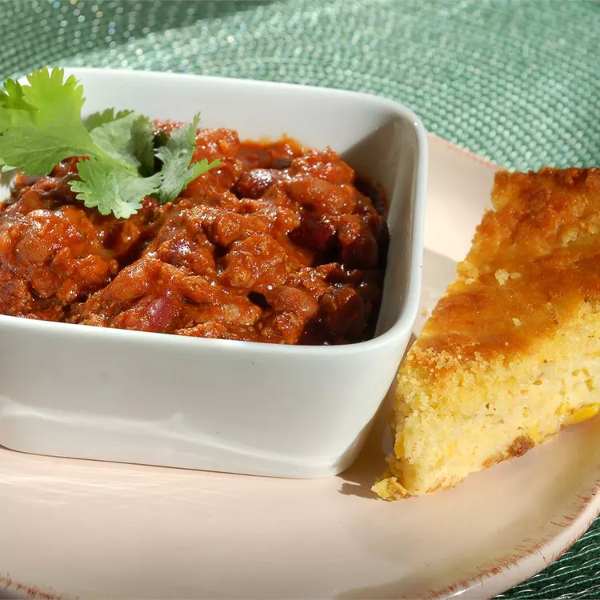

Blue-Ribbon-Chili

This blue ribbon beef chili is the tastiest, easiest recipe you'll ever find. I recommend serving it with sliced jalapeño chile peppers and crackers or cornbread.
Ingredients
- 2 pounds ground beef
- ½ medium onion, chopped
- 2 ½ cups tomato sauce
- 1 (15 ounce) can light red kidney beans
- 1 (15 ounce) can dark red kidney beans
- 1 (8 ounce) jar salsa
- ¼ cup chili seasoning mix
- 1 teaspoon ground black pepper
- ½ teaspoon garlic salt
Steps
- Place ground beef and onion into a large nonstick saucepan over medium heat.
Cook and stir until beef is browned and crumbly and onion is translucent, about 10 minutes.
Drain grease if desired.
- Stir in tomato sauce, light and dark kidney beans, salsa, chili seasoning, pepper, and garlic salt until well combined.
Reduce the heat to low and simmer for at least 1 hour before serving.